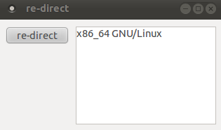

Re-direct Shell Outputs in Python
Python works pretty well as logic glue. If you have several command-line (CLI) programs, python can make them cooperate efficiently. Say, it can launch those CLI programs at background and then display or pass their outputs to the front-end (e.g. GUI, files, sockets, and so forth). This article demos how to re-direct CLI shell outputs to a front-end GUI in Python.
Subprocess + Pipe
'Subprocess.Popen()' will first re-spawn a sub-process (CLI program) and then establish an anonymous pipe to intercept its shell outputs.
import subprocess # re-spawn sub-process 'make clean' and setup its pipe task = subprocess.Popen(['make', 'clean'], stdout = subprocess.PIPE) # obtain shell outputs in 'msg' and any error messages in 'err' msg, err = task.communicate() print 're-direct shell outputs:\n%s' %msg
Commands API
'commands.getstatusoutput()' follows almost the same manner as the previous method. It returns with calling status (e.g. any errors or warnings) as well.
import commands status, outputs = commands.getstatusoutput('make clean') print 're-direct shell outputs:\n%s' %outputs
GUI front-end
Demo code showing shell outputs redirection from 'uname -om' to wxPython front-end:
1 2 3 4 5 6 7 8 9 10 11 12 13 14 15 16 17 18 19 20 21 22 23 24 25 26 27 28 29 | #!/usr/bin/env python # Filename: redirect.py import wx import subprocess class my_frame(wx.Frame): def __init__(self, parent, title): wx.Frame.__init__(self, parent, title = title, size = (320, 160)) panel = wx.Panel(self, wx.ID_ANY) self.btn_test = wx.Button(panel, label = 're-direct', \ pos = (10, 10), size = (90, 25)) self.disp_box = wx.TextCtrl(panel, pos = (110, 10), \ size = (200, 140), style = wx.TE_MULTILINE) self.Bind(wx.EVT_BUTTON, self.OnReDirect, self.btn_test) self.Show(True) def OnReDirect(self, event): self.disp_box.SetValue('') task = subprocess.Popen(['uname', '-om'], \ stdout = subprocess.PIPE) msg, err = task.communicate() self.disp_box.AppendText(msg) if __name__ == '__main__': app = wx.App() frame = my_frame(None, 're-direct') app.MainLoop() |
